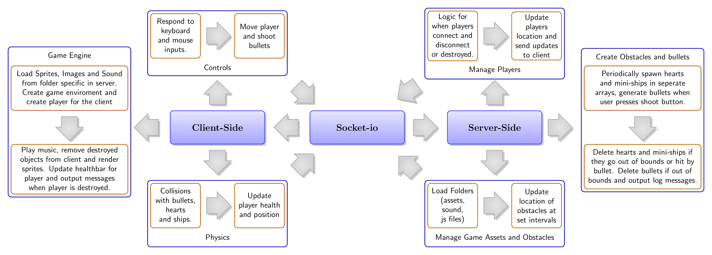

\documentclass[tikz,border=10pt]{standalone}
\usetikzlibrary{positioning,fit,shapes.arrows,shadows}
\newcounter{module}
\setcounter{module}{0}
\renewcommand*\themodule{\Alph{module}}
\tikzset{%
module/.style={rounded corners, align=center, font=\sffamily, thick},
simple module/.style={module, top color=blue!10, bottom color=blue!35, draw=blue!75, text width=40mm, minimum height=15mm, drop shadow},
square module/.style={module, draw=orange!75!black, minimum height=20mm, text width=20mm},
long module/.style={module, draw=orange!75!black, minimum height=20mm, text width=50mm},
combo module/.style={module, draw=blue!75!black},
simple module/.pic={
\stepcounter{module}
\node (module \themodule) [simple module] {};
},
module down arrow/.style={module arrow, shape border rotate=-90, yshift=1.25mm},
module up arrow/.style={module arrow, shape border rotate=90, yshift=-1.25mm},
module right arrow/.style={module arrow, xshift=-1.25mm},
module left arrow/.style={module arrow, rotate = -180, xshift=1.25mm},
module rightup arrow/.style={module arrow,rotate =45, yshift=1.25mm,xshift=1.25mm},
module rightdown arrow/.style={module arrow,rotate =-45, yshift=-1.25mm,xshift=1.25mm},
module leftup arrow/.style={module arrow,rotate =135, yshift=1.25mm,xshift=-1.25mm},
module leftdown arrow/.style={module arrow,rotate =215, yshift=-1.25mm,xshift=-1.25mm},
pics/horizontal module/.style n args=3{
code={
\stepcounter{module}
\coordinate (c) at (0,0);
\node [module right arrow] at (c) {};
\node (module \themodule-1) [square module, left=7.5mm of c] {#1};
\node (module \themodule-2) [square module, right=7.5mm of c] {#2};
\node (module \themodule-3) [below=1.5mm of c |- module \themodule-2.south, module] {#3};
\node (module \themodule) [fit=(module \themodule-1) (module \themodule-2) (module \themodule-3), combo module] {};
}
},
pics/vertical module/.style n args=3{
code={
\stepcounter{module}
\coordinate (c) at (0,0);
\node [module down arrow] at (c) {};
\node (module \themodule-1) [long module, above=7.5mm of c] {#1};
\node (module \themodule-2) [long module, below=7.5mm of c] {#2};
\node (module \themodule-3) [above=1.5mm of module \themodule-1.north, module] {#3};
\node (module \themodule) [fit=(module \themodule-1) (module \themodule-2) (module \themodule-3), combo module] {};
}
},
module arrow/.style={single arrow, single arrow head extend=2.5mm, drop shadow, draw=gray!75, inner color=gray!20, outer color=gray!35, thick, shape border uses incircle, text height=1.5mm, text width=2.5mm, anchor=center},
module doubleArrow/.style={double arrow, double arrow head extend=2.5mm, drop shadow, draw=gray!75, inner color=gray!20, outer color=gray!35, thick, shape border uses incircle, text height=1mm, text width=5mm, anchor=center},
}
\begin{document}
\begin{tikzpicture}
%% Module A --- client side modules
\pic {simple module};
\node[] (node name) at (module A) {\large {\textbf{Client-Side}}};
\node [module down arrow] at ([yshift=-7.5mm]module A.south) {};
\node [module up arrow] at ([yshift=7.5mm]module A.north) {};
\node [module left arrow] at ([xshift=-7.5mm]module A.west) {};
%% Module b, below module A
\pic [below=27.5mm of module A.south] {horizontal module={Collisions with bullets, hearts and ships.}{Update player health and position}{Physics}};
\node [module rightup arrow] at ([xshift=6.5mm,yshift=20mm]module B.east) {};
%% Module c, above module A
\pic [above=33.5mm of module A.north] {horizontal module={Respond to keyboard and mouse inputs.}{Move player and shoot bullets}{Controls}};
\node [module rightdown arrow] at ([xshift=6.5mm,yshift=-20mm]module C.east) {};
%% Module D, left of module A, removed phaser
\pic [left=45mm of module A.west] {vertical module={Load Sprites, Images and Sound from folder specific in server. Create game enviroment and create player for the client}{Play music, remove destroyed objects from client and render sprites. Update healthbar for player and output messages when player is destroyed.}{Game Engine}};
%% Module E
\pic [right=20mm of module A.east] {simple module};
\node[] (node name) at (module E) {\large {\textbf{Socket-io}}};
\node [module left arrow] at ([xshift=-7.5mm]module E.west) {};
\node [module right arrow] at ([xshift=8.75mm]module E.east) {};
%% Module F --- server side modules
\pic [right=19mm of module E.east] {simple module};
\node[] (node name) at (module F) {\large {\textbf{Server-Side}}};
\node [module right arrow] at ([xshift=7.5mm]module F.east) {};
\node [module up arrow] at ([yshift=7.5mm]module F.north) {};
\node [module down arrow] at ([yshift=-7.5mm]module F.south) {};
%% Module G
\pic [right=45mm of module F.east] {vertical module={Periodically spawn hearts and mini-ships in seperate arrays, generate bullets when user presses shoot button.}{Delete hearts and mini-ships if they go out of bounds or hit by bullet. Delete bullets if out of bounds and output log messages.}{Create Obstacles and bullets}};
%% Module H
\pic [above=33.5mm of module F.north] {horizontal module={Logic for when players connect and disconnect or destroyed.}{Update players location and send updates to client}{Manage Players}};
\node [module leftdown arrow] at ([xshift=-6.5mm,yshift=-22.5mm]module H.west) {};
%% Module I
\pic [below=27.5mm of module F.south] {horizontal module={Load Folders (assets, sound, js files)}{Update location of obstacles at set intervals}{Manage Game Assets and Obstacles}};
\node [module leftup arrow] at ([xshift=-6.5mm,yshift=22.5mm]module I.west) {};
% \pic [right=42.5mm of module B.east] {vertical module={Description 3}{Description 4}};
% \node [module down arrow] at ([yshift=-7.5mm]module C.south) {};
% \pic [below=27.5mm of module C.south] {horizontal module={Description 5}{Description 6}};
% \node [module down arrow] at ([yshift=-7.5mm]module D.south) {};
% \pic [below=17.5mm of module D.south] {simple module};
\end{tikzpicture}
\end{document}Created by David Li